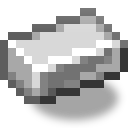
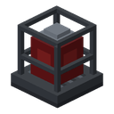
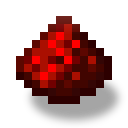

Lámpara de alarma
alaindustrial:reactor_alarm_lamp
Resumen
La lámpara de alarma es un faro rojo dentro de una jaula de hierro. La encienden **dos cosas, y basta con
- El reactor al que está pegada. Una lámpara colocada con su base sobre la carcasa de una sala de reactor formada —en el techo, en una pared por fuera o por dentro— o sobre el controlador o una pila de un reactor desnudo pasa a formar parte del reactor y se enciende sola con su alarma: sin polvo, sin antena. Puede haber tantas lámparas como se quiera (decisión del propietario, 2026-11-04).
- Redstone, en cualquier sitio. Desde el mástil de la antena del reactor por cualquier circuito del jugador —polvo, repetidores, inversor— en la otra punta de la base, junto a la cama, en la entrada; y lo mismo desde una placa de presión en la puerta o una granja de mobs: a la lámpara le da igual de dónde venga la señal.
Se coloca en cualquiera de las seis caras: con la base hacia el bloque sobre el que se pone y la jaula hacia fuera.
La lámpara no hace ruido (el sonido de la alarma corresponde a la futura sirena del reactor, y no distingue la intensidad de la señal: cualquier señal mayor que cero la enciende, y con el reactor luce desde el aviso hasta la emergencia.
Qué hace
| Propiedad | Valor |
|---|---|
| Entrada | señal de redstone de cualquier intensidad por cualquier lado (como la lámpara de redstone vanilla) o la alarma del reactor al que está pegada su base |
| Encendida | luz 14 (como una antorcha), lente roja que parpadea |
| Sin señal | se apaga a los 4 ticks (como la lámpara vanilla): un pulso corto no se corta a medias |
| Distingue 7 y 15 | no: encendido/apagado; el nivel lo distinguen un comparador o la longitud del polvo (ver «Cómo distinguir el aviso de la emergencia») |
| Sonido | no |
| BlockEntity | no |
| Vínculo con el reactor | solo por su base: pegada a la carcasa de una sala formada, al controlador o a una pila de un reactor desnudo, luce con su alarma; colocada en otro sitio, solo con redstone |
La lámpara sobre el reactor
| Propiedad | Valor |
|---|---|
| Dónde | con la base sobre cualquier celda de la carcasa de una sala formada (por fuera o por dentro), sobre el controlador, sobre una pila de un reactor desnudo |
| Luce | con la alarma de 7 en adelante: los mismos enclavamientos que el mástil de la antena; se enciende al 70 % y se apaga por debajo del 60 %; con la fusión (85 ↔ 70 %) y la cuenta atrás luce |
| En normal | apagada |
| Cuántas | tantas como se quiera |
| Cómo se encuentra | el controlador recoge esas lámparas al recorrer la carcasa (cada 40 ticks); en un reactor desnudo, alrededor del controlador y de las pilas; una colocada a mano empieza a lucir desde el recorrido siguiente |
| Quién la escribe | el controlador, como último paso de su tick, y solo cuando cambia: no hay actualizaciones de más |
| Cuándo se apaga sola | una lámpara que luce por el reactor comprueba su apoyo cada 20 ticks: si la celda no es carcasa de una sala formada, ni el controlador, ni una pila, se apaga |
El reactor con antena y polvo y la lámpara pegada al reactor son dos caminos independientes: con redstone la lámpara funciona como antes, y luce si hay al menos uno de ellos.
Salvedad conocida: un controlador destruido por una explosión (y no por el jugador) deja la carcasa «formada» hasta la siguiente construcción —la misma imperfección cosmética que la textura sin juntas de la carcasa—, y una lámpara sobre esa carcasa puede seguir encendida. El jugador que rompe el controlador desmonta la sala, y las lámparas se apagan.
Cómo distinguir el aviso de la emergencia
El mástil de la antena da 7 con el aviso y 15 con la emergencia (ver la antena). La lámpara se enciende con cualquiera de los dos; se distinguen con el circuito:
- Longitud del polvo. La señal baja 1 por cada bloque de polvo. Una lámpara a más de 7 bloques de polvo del mástil solo recibe la señal de 15, es decir, se enciende solo en una emergencia; la más cercana, ya con el aviso.
- Un comparador en modo resta o comparación separa el 7 del 15 igual que cualquier otra señal.
Parada de emergencia hecha a mano
El controlador funciona mientras le llega señal. Si la señal de alarma se lleva al controlador a través de un inversor (una antorcha de redstone), el reactor se para solo con la alarma. Sin inversor, la señal de alarma haría lo contrario y encendería el reactor; por eso la descripción del mástil y la guía lo dicen claramente. El mástil en sí nunca toca el controlador ni le da señal (ver la antena).
Luz y parpadeo
- El nivel de luz de la lámpara encendida es un 14 constante, como el de una antorcha (decisión del propietario, 2026-11-04). Solo parpadea la imagen: la luz del bloque no salta; si lo hiciera, el mundo recalcularía la iluminación en cada destello.
- El parpadeo es la textura animada de la lente (
.mcmeta): un brillo que recorre la lente no más de una vez por segundo, regular, sin caídas al azar (la misma regla que la pantalla de la tableta en. - La lente se dibuja con brillo
light_emission: 15en el modelo, así que el destello se ve en plena oscuridad. - La animación sigue el reloj común del atlas: todas las lámparas del mundo parpadean a la vez. Es lo esperado: así parpadean también los bloques animados vanilla.
- Apagada, la lámpara es una lente rojo oscuro sin brillo, igual que una lámpara sin señal.
Energía
| Campo | Valor |
|---|---|
| Papel | ninguno |
| Búfer (EU/FE) | 0 |
| Entrada / salida máx. (EU/FE/tick) | n/a |
La lámpara no consume EU/FE: la alimenta la propia señal de redstone, como a la lámpara vanilla, o la alarma de su reactor. La alarma no debe depender de que haya un cable hasta la lámpara.
Propiedades del bloque
| Campo | Valor |
|---|---|
| Forma | casi un cubo completo: 14 × 15 × 14 px, base pegada al apoyo (de pie en el suelo: x y z 1..15, y 0..15), girada según la cara; la jaula es transparente ⇒; las seis formas se construyen una sola vez (ADR-023) |
| Colisión | coincide con la forma |
| Colocación | en cualquiera de las 6 caras (facing = cara pulsada): base hacia el apoyo, jaula hacia fuera; en una pared mira hacia fuera de ella |
| Apoyo | no hace falta para sostenerse: quitar el apoyo no tira la lámpara; para el vínculo con el reactor, el apoyo es aquello a lo que está pegada la base |
| Dureza | 1.5 |
| Resistencia a explosiones | 6.0 |
| Herramienta | pico (necesario para soltar el bloque), etiqueta mineable/pickaxe |
| Sonido | metal |
| Emisión de luz | 14 con lit o alarm, 0 sin ellos |
| Estados de bloque | facing (6) × lit (2, por redstone) × alarm (2, por el reactor = 24 |
| Suelta | la propia lámpara, ×1 |
La lámpara es una luminaria de metal, no un bloque de la pared del reactor: no necesita la dureza de la carcasa. No ocupa una celda de la pared de la sala ni cuenta como brecha: va pegada a la carcasa por fuera o por dentro.
Apariencia
El aspecto es la variante 01 «Faro en jaula», elegida por el propietario el 2026-11-03 entre tres bocetos (tools/model_sources/reactor_alarm_lamp_concepts/, fuente v01_cage_beacon/reactor_alarm_lamp.bbmodel): una lente de cristal rojo en una jaula de hierro sobre una base oscura, con un capuchón arriba.
- Dos modelos: apagado (lente rojo oscuro) y encendido (lente con textura animada y
light_emission: 15), girados por el estado de bloque según las seis caras, como la vara del End vanilla. - El icono del objeto es el modelo apagado.
- La jaula no tapa a los vecinos: el bloque no ocluye, y las caras vecinas se dibujan.
Recetas
- Fabricación:, forma «3×3», ×1 por vez.
I G I I = lingote de hierro ×4
G L G G = panel de cristal tintado de rojo (minecraft:red_stained_glass_pane) ×3
I R I L = lámpara de redstone (minecraft:redstone_lamp) ×1
R = redstone ×1Se lee como el aparato: una lámpara vanilla en una carcasa de hierro tras cristal rojo, más un cable. La receta no depende de la fase nuclear: la lámpara sirve para cualquier circuito y se desbloquea desde el principio.
Progresión
- Nivel: ninguno (bloque pasivo, sin EU/FE).
- Requiere: solo materiales vanilla.
- Desbloquea: nada nuevo; es la pareja de la salida de redstone de la antena del reactor.
Relacionado
- Antena de reactor: su mástil da la señal de redstone de la alarma.
- Controlador de reactor: de donde viene la alarma; funciona con señal.
- Lámpara de reactor: otra luminaria, un bloque de la carcasa que luce con
formed.
Fabricación
Fabricación con forma
red st
red st
redsto
red st

▶
Lámpara de alarma